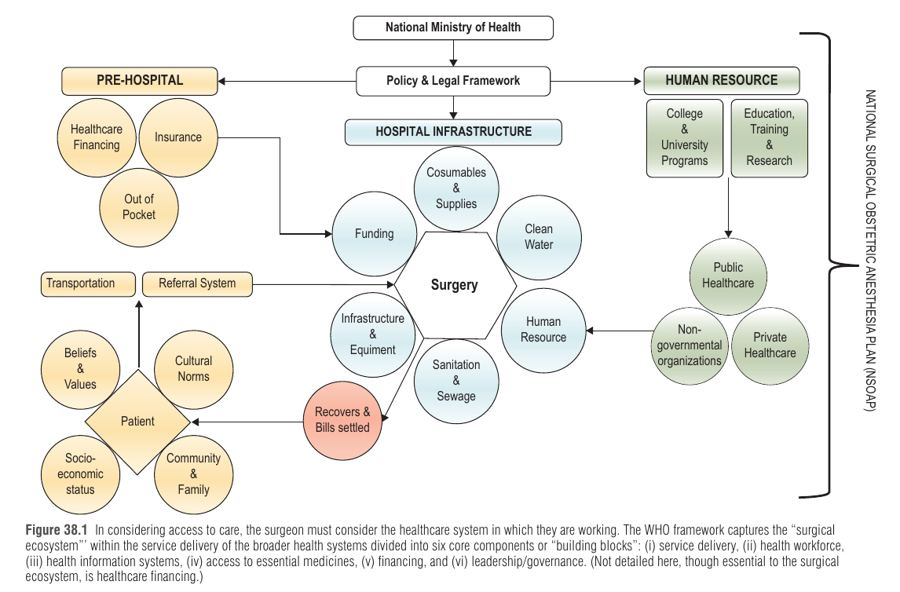
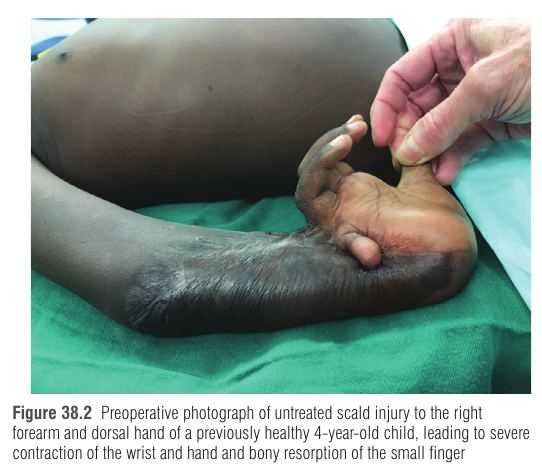
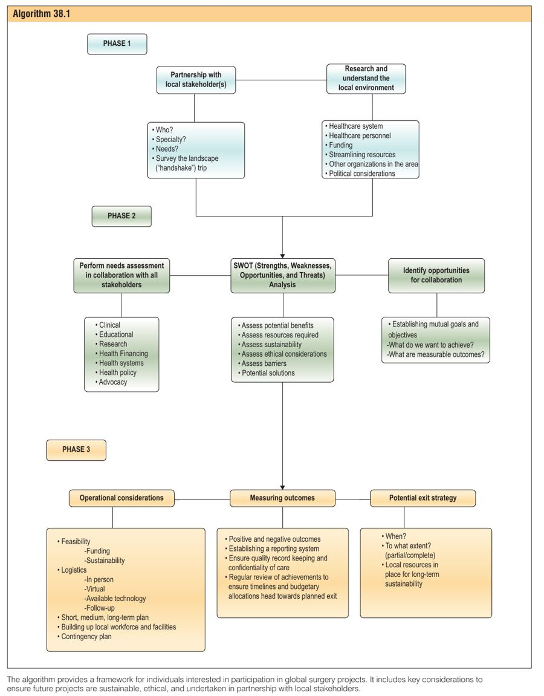

הפרק אינו עוסק במחלה אלא במערכת: מי מקבל ניתוח, מי לא מקבל, למה, ואיך כירורג פלסטי יכול להשפיע בלי לפגוע. המסר המרכזי: עזרה כירורגית בת-קיימא נבנית על שותפות עם הצוות המקומי, בניית יכולת (capacity-building) ואסטרטגיית יציאה – לא על ביקורים חד-פעמיים.
אין מספיק מנתחים בארצות מעוטות הכנסה ← מחלות ופגיעות הניתנות לטיפול נשארות ללא טיפול ← נכות ותמותה ← אובדן פריון כלכלי ← פחות משאבים למערכת הבריאות ← המעגל נסגר.
בסיכום הפרק: כ-5 מיליארד בני אדם חסרי גישה לניתוח בטוח, זול ובזמן. רק כחמישית ממנתחי העולם משרתים את המחצית העניה של האוכלוסייה. צפיפות מנתחים פלסטיים: כ-0.007-0.009 ל-100,000 במדינות מעוטות/בינוניות הכנסה (LMICs) לעומת כ-2.18 בארה"ב (פער של פי ~300). בניגריה, מנתח פלסטי אחד משרת יותר ממיליון איש. ב-2010 כ-33% מכלל מקרי המוות בעולם נבעו ממצבים הדורשים טיפול כירורגי – יותר מ-HIV, מלריה וטבלה יחד – ועד 2% מהצמיחה הכלכלית אובדת בגלל מצבים כירורגיים שלא טופלו.
ה-surgical ecosystem הוא המסלול של החולה מהקהילה, דרך ההפניה, התחבורה, בית החולים והניתוח, ועד חזרתו הבריא לקהילה. כולל גם גורמים תרבותיים, כלכליים ופוליטיים (איור 38.1: ששת "אבני הבניין" של ה-WHO).
| מודל מימון | עיקרון | דוגמה / הערה |
|---|---|---|
| Beveridge | שירות לאומי יחיד, הממשלה מממנת ושולטת במחירים | בריטניה (NHS) |
| Bismarck | מעסיקים ועובדים מממנים ביטוח סוציאלי; הממשלה שולטת במחירים | גרמניה |
| National health insurance | ביטוח לאומי יחיד – שילוב של שני הקודמים | קנדה, טייוואן |
| Out-of-pocket | המטופל משלם ישירות | המודל השולט ב-LMICs, כ-50% מהמימון; סיכון להוצאה קטסטרופלית, העניים משלמים יותר מהעשירים באופן יחסי |

ב-LMICs יש מעט מנתחים פלסטיים, ולכן הטיפול ניתן לעיתים קרובות ע"י אורתופדים, מנתחים כלליים, מקסילו-פציאליים או רופאים שאינם מומחים. לכן בניית מיומנות אצל מנתחים שאינם פלסטיים היא חלק מה-capacity-building.
| תחום | עובדות מפתח | למה זה קורה / מה פלסטי יכול לתרום |
|---|---|---|
| כוויות | מעל 265,000 מקרי מוות בשנה; 95% מהמקרים ב-LMICs. מרכזי כוויות רק בערים גדולות | בלי דרמטומים ו-meshers נוצרות קונטרקטורות (כגון כוויית צינון של כף יד/אמה בילד) שהיו ניתנות למניעה; ניתוח שחרור קונטרקטורה + השתלת עור בעובי מלא (איור 38.3) משיב תפקוד. הנכות מובילה לסטיגמה ואובדן פרנסה |
| שפות וחכים שסועים ומומים מולדים | המום הקרניו-פציאלי השכיח ביותר: כ-1 ל-600 לידות | שיעור גבוה ב-LMICs, כנראה בין היתר בגלל חוסר בחומצה פולית; הטיפול מתעכב או חסר. מודלים בני-קיימא: הכשרת מנתחים מקומיים ומרכזי טיפול מקיפים. ביקורים קצרים משאירים סיבוכים לצוות המקומי |
| טראומה | 4.4 מיליון מקרי מוות בשנה מפגיעות; 1.3 מיליון בתאונות דרכים, מעל 90% מהם ב-LMICs | עליית השימוש ברכב + מערכת טרום-אשפוזית ירודה. פלסטי תורם בטראומה של היד, הפנים, כוויות, עצבים ורקמות רכות להקטנת נכות |
| שחזור אונקולוגי | 3.4 מתוך 4.4 מיליון מקרי מוות מסרטן לפני גיל 70 הם ב-LMICs | הגעה מאוחרת (עוני, אנאלפביתיות בריאותית, אמונות) ← מחלה מתקדמת. בלי כישורי שחזור, חולה לא יקבל ניתוח מרפא או ניחום מורכב |

שלב 1: למה, איפה ועם מי ← שלב 2: לוגיסטיקה – מה ואיך ← שלב 3: הערכה ותוצאות
| שלב | פעולות עיקריות |
|---|---|
| 1. מעורבות: למה, איפה ועם מי | בדיקת המוטיבציה שלך שוב ושוב; בדיקה אם כבר קיימת יוזמה במוסד שלך; בחירת אזור לפי צורך ולא רק לפי מורשת או נוחות (ביקוש מול היצע לא תמיד חופפים); זיהוי שותף מקומי – "אתה אורח בבית של מישהו אחר"; ביקור לחיצת יד (handshake visit): ביקור באישור, ללא טיפול קליני, לצורך היכרות והבנת המערכת, המימון ושרשרת האספקה. ארגון אזורי לדוגמה: COSECSA במזרח, מרכז ודרום אפריקה |
| 2. לוגיסטיקה: מה ואיך | הערכת צרכים שמוגדרת ע"י השותפים המקומיים; יעדים תחומים בזמן; תוכנית משותפת עם תפקידים ומימון; ניתוח SWOT (חוזקות, חולשות, הזדמנויות, איומים); הערכת קיימות, אתיקה ומחסומים. תחומי שיתוף: קליני, חינוכי, מחקרי, מדיניות והסברה |
| 3. הערכה ותוצאות | המשכיות (חזרה לאותו מקום); מדידת תוצאות ומערכת דיווח (למשל המרת שנות חיים מותאמות-נכות שנמנעו להערכה כלכלית); אסטרטגיית יציאה: מתי, באיזה היקף, אילו משאבים מקומיים יישארו. הכשרת מנתח אחד משפיעה על מאות מטופלים, הרחבת תוכנית הכשרה על אלפים |

| מודל | יתרון | מגבלה |
|---|---|---|
| ממשלתי (ציבורי) | זול ונגיש לכל | משכורות נמוכות, ציוד חסר; רופאים עובדים גם בפרטי כדי להשלים הכנסה, ולעיתים שובתים |
| פרטי | מקצר זמני המתנה, תשתית דומה ל-HIC | לא נגיש לרוב האוכלוסייה; יוצר מערכת "מדורגת" (עשירים מול עניים) |
| ארגונים דתיים (FBOs) | היסטוריה ארוכה; עד 40% מהטיפול הישיר בחלק מהמדינות | עם הזמן עברו להכשרת כוח אדם מקומי; חלקם עדיין ללא מיקוד בקיימות |
| NGO וארגוני סיוע בינלאומיים | תרומה משמעותית בעת משבר | תיאום ושקיפות מימון/תוצאות חסרים; עבודה ב"silos" |
| משלחות קצרות-טווח (STMTs) | הצורה הפופולרית ביותר למנתחי HIC; מאפשרות לנתח כשיש עבודה במקום אחר | לא משקיעות במערכת, מתחרות על משאבים, מכפילות שירותים, מסובכות עקב שפה ותרבות; סיבוכים נשארים לצוות המקומי; יקרות. פתרון חלקי: מעבר להוראה ולבניית יכולת, כולל מרחוק |
דוגמאות להצלחה: PSF-SHARE (הכשרה והנחיה דרך תוכנית שהפכה לוירטואלית בקורונה), שיתוף של RACS (האוסטרלי) עם איי האוקיינוס השקט במשך 15 שנה, שבסופן המנתחים המקומיים קבעו את הסדר היום, ותוכנית HRH ברואנדה.
דילמות אתיות נפוצות: היקף העיסוק (scope of practice), סטנדרט הטיפול, השפעה על מערכת הבריאות המקומית והסכמה מדעת. הן שכיחות יותר במשלחות קצרות-טווח מאשר בהוראה, ויש פער בתפיסה בין מנתחים אורחים למקומיים – ולכן נדרשת התאמת ציפיות מראש והערכה מחדש מתמשכת. יש גם סיכון לחזרה על דפוסי קולוניאליזם.
עוד: איכות חשובה לא פחות מכמות – כ-40% ממקרי המוות הניתנים למניעה נובעים מאי-ניצול מערכת הבריאות שהמטופלים אינם מאמינים בה; יש לעקוב אחר סיבוכים, תוצאות מדווחות ע"י מטופל וישיבות תחלואה ותמותה. גם מי שעוד לא סיים הכשרה יכול לתרום דרך מחקר, הסברה ובניית יכולת.
P – Partner: האם יש שותף מקומי שמוביל?
E – Evaluate: האם הערכת צרכים ו-SWOT נעשו, ויש תוצאות מדידות?
E – Exit: האם יש אסטרטגיית יציאה לקיימות?
דמייני שאת אורחת בבית של משפחה. את לא מסדרת מחדש את הרהיטים בלי לשאול (שותף), לא מביאה אוכל שאף אחד לא ביקש (הערכת צרכים), ולפני שאת הולכת מלמדת את בעלי הבית לתקן בעצמם את הברז הדולף – כדי שלא יצטרכו אותך בחזרה (יציאה).
מנתח פלסטי מבית חולים אוניברסיטאי רוצה לסייע בטיפול בילדים עם קונטרקטורות כוויה באזור כפרי באפריקה. הוא מתכנן לטוס עם צוות לשבועיים, לנתח כמה שיותר ילדים ולחזור. שותף מקומי מציין שרוב הילדים מגיעים מרחק של ימי נסיעה, ושאין פיזיותרפיה אחרי הניתוח.